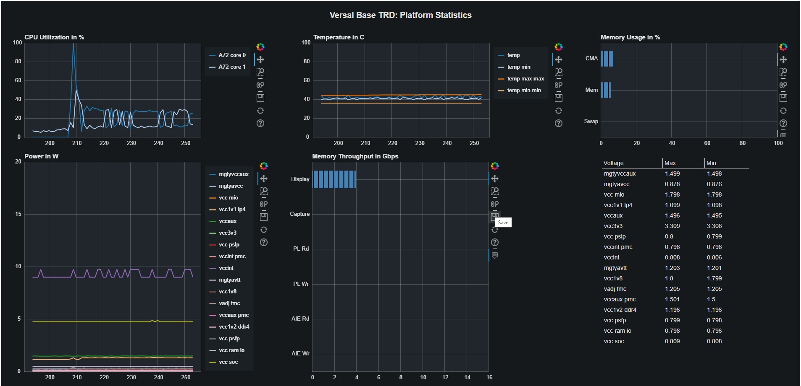

3.2. Run the PCIe TRD Dashboard¶
The PCIe TRD dashboard is implemented using the python bokeh framework and visualizes the following useful platform statistics:
CPU utilization
Memory usage
Temperature using the versal-sysmon device through the
hwmoninterfacePower and voltage using the ina226 power monitors through the
hwmoninterfaceMemory throughput using the AXI performance monitors (APM) in the PL
The dashboard is intended to be run in parallel with any of the accelerated applications and is useful to monitor, evaluate and debug system performance while the target application is running live. A network connection is required to run the bokeh server.
3.2.1. Connect to the Bokeh Server¶
Follow these steps to boot the board into Linux. These steps can be skipped if you are already at the Linux prompt xilinx-vck190-20222
Ensure all steps under the section Board Setup are verified.
Insert the prepared micro SD card into the Versal SD card slot (refer to the image in Board Setup)
Have the UART0 terminal emulator tab connected.
Turn ON power switch SW13.
On Versal UART0 terminal, you would see the Versal device booting from the micro SD card, starting with the message “Xilinx Versal Platform Loader and Manager”
In about 60 seconds boot is complete. Observe the Linux prompt xilinx-vck190-20222 and finish logging in.
Observe autostart of the bokeh server that serves the Base TRD dashboard application as seen in the example below:
xilinx-vck190-20222 login: petalinux [ 24.344617] trd-dashboard.sh[684]: TRD Dashboard will be running at http://192.168.0.13:5006/trd-dashboard [ 28.466649] trd-dashboard.sh[697]: 2022-11-26 23:52:55,858 Starting Bokeh server version 2.4.2 (running on Tornado 6.1) [ 28.475214] trd-dashboard.sh[697]: 2022-11-26 23:52:55,867 User authentication hooks NOT provided (default user enabled) [ 28.498431] trd-dashboard.sh[697]: 2022-11-26 23:52:55,890 Bokeh app running at: http://localhost:5006/trd-dashboard [ 28.499011] trd-dashboard.sh[697]: 2022-11-26 23:52:55,891 Starting Bokeh server with process id: 697
Note
If you do not see the above messages or after a TIMEOUT of 90 seconds you see a message log with ‘IP address not found’ instead,
trd-dashboard.sh[682]: Cant find IP addr, please call /usr/bin/trd-dashboard.sh after assigning IP addr
then double check your network connection. If DHCP is not available and auto-assigment of an IP address times out, you can use a private network and start the bokeh server as follows. User is required to use sudo while running trd-dashboard or jupyter-lab. It is adviced to use systemctl to start the abover services as shown below.
3.2.1.1. Setting up a private network¶
In case of a private network, user can assign a static address within the subnet of the host machine.
Setting up a private network with target board and the host machine for Windows users:
Ensure a direct connection between the windows host machine and the target board using an ethernet cable as shown in the Board Setup section.
In windows, run command prompt as an admisntrator
Press Windows+R to open the “Run” box. Type “cmd” into the box. press Ctrl+Shift+Enter to run the command as an administrator
Run ipconfig on the windows machine to list available ethernet adapters and set a static private ip
# A sample output after executing ipconfig # notice interface "Ethernet" has an auto address assigned with no Default Gateway ipconfig Ethernet adapter Ethernet: Connection-specific DNS Suffix . : Link-local IPv6 Address . . . . . : fe80::1d8d:ac40:ff9b:8d1%21 Autoconfiguration IPv4 Address. . : 169.254.8.209 Subnet Mask . . . . . . . . . . . : 255.255.0.0 Default Gateway . . . . . . . . . : # Set static ip address netsh interface ip set address name="YOUR INTERFACE NAME" static "IP_ADDRESS" "SUBNET_MASK" # Example netsh interface ip set address name="Ethernet" static 10.0.0.1 255.255.255.0
Ensure to boot the target board (VCK190) into Linux
Set a private ip address for the target within the subnet of host machine and verify connectivity.
sudo ifconfig eth0 10.0.0.2 netmask 255.255.255.0 # Perform a ping test to the host form the target ping -c 3 10.0.0.1
Setting up a private network with target board and the host machine for Linux users:
Make a direct connection between the Linux host machine and the target board using an ethernet cable
Run ifconfig on the Linux machine to list available ethernet adapters and set a static private ip
# Example to set an ip 10.0.0.1 to ethernet interface enp2s0: sudo ifconfig enp2s0 10.0.0.1 netmask 255.255.255.0
Ensure to boot the target board (VCK190) into Linux
Set a private ip address for the target within the subnet of host machine and verify connectivity.
sudo ifconfig eth0 10.0.0.2 netmask 255.255.255.0 # Perform a ping test to the host form the target ping -c 3 10.0.0.1
To start the bokeh server run
sudo systemctl restart trd-dashboard
To check the status of bokeh server run
systemctl status trd-dashboard
3.2.2. Start the Dashboard¶
Note: This dashboard is tested with the Chrome browser only and optimized for a display resolution of 1920x1080.
To connect to the bokeh server and to start the dashboard, copy the URL printed on the serial console and paste it into the Chrome browser address bar, for example:
http://192.168.1.133:5006/trd-dashboard
The dashboard will be rendered in your browser and should look as follows

{kind=link}
Licensed under the Apache License, Version 2.0 (the “License”); you may not use this file except in compliance with the License.
You may obtain a copy of the License at http://www.apache.org/licenses/LICENSE-2.0
Unless required by applicable law or agreed to in writing, software distributed under the License is distributed on an “AS IS” BASIS, WITHOUT WARRANTIES OR CONDITIONS OF ANY KIND, either express or implied. See the License for the specific language governing permissions and limitations under the License.